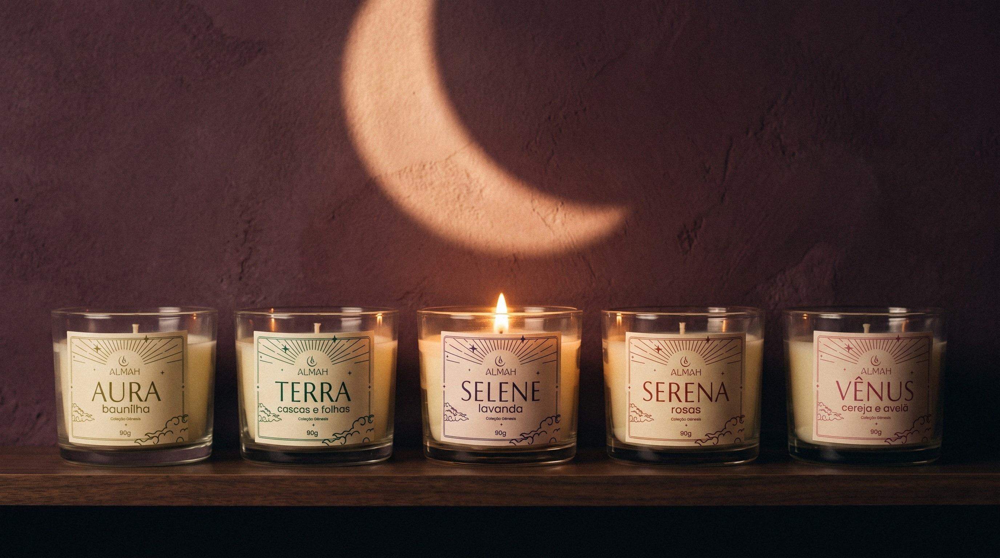
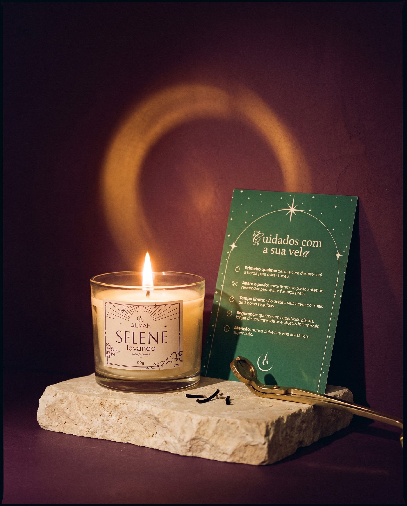
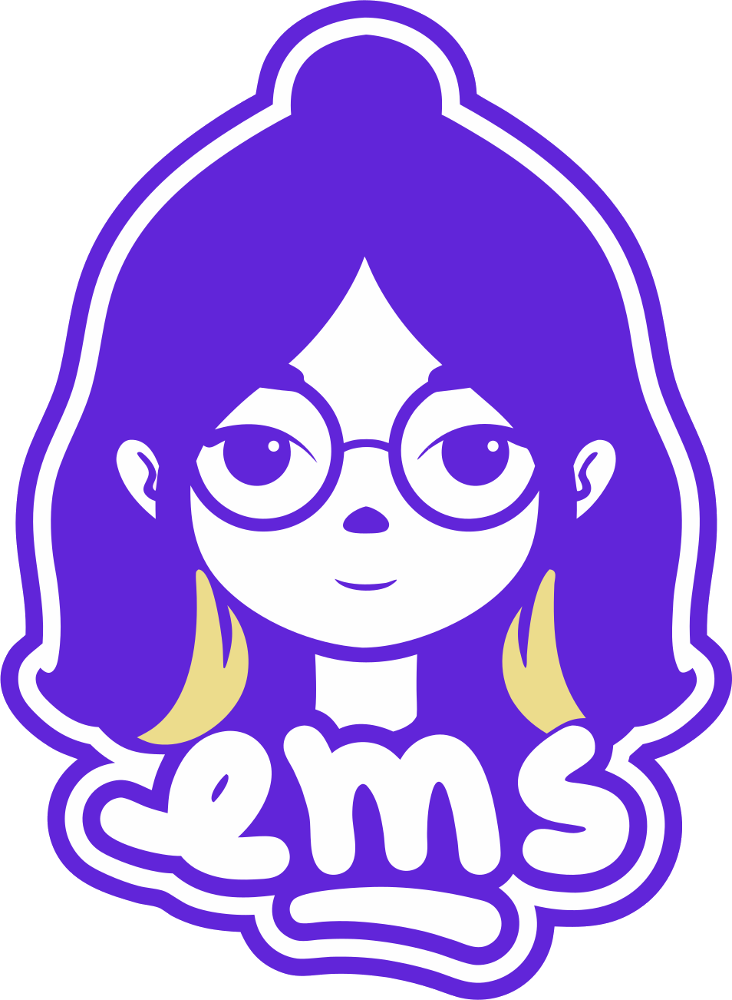

Identidade visual
Luz que acalma,
aroma que abraça.
O símbolo
Uma luz que nasce
dentro da lua.
Uma lua crescente e uma chama, desenhadas à mão e redesenhadas em vetor: dois círculos e um eixo.
As letrasQuatro famílias, uma tinta só
SELENE
ABCDEFGHIJKLMNOPQRSTUVWXYZ
Aboreto nomes das velas e títulos
A
Fleur De Leah capitulares
Luz que acalma, aroma que abraça.
Aa Bb Cc Dd Ee Ff Gg 0123456789
Buenard frases e destaques
Aa
Velas aromáticas feitas à mão. Uma tinta só, sobre papel creme.
Poppins textos e informações

A primeira coleção da ALMAH
Gênesis,
·
a origem de tudo.
Um nome forte para a coleção fundadora: o poder da criação e de manifestar sonhos.
Cada nome, um ritual.
Auraa energia que envolve a casa
Terraraízes e estabilidade
Selenea lua na mitologia
Serenado latim serenus, claro e tranquilo
Vênusa deusa do amor e da beleza
Noite#1C1726
Roxo#7138B7
Creme#FFEBB4
Papel#F5ECD7
Verde apoio#1D7053
As cores
Roxo profundo,
sempre.
A cor principal da ALMAH. As outras acompanham; o verde só apoia.
#503B69 · CMYK
Abrir uma vela ALMAH.
Selene é a Lua na mitologia, e a lavanda é a planta da lua: descanso, sonho e intuição.

Cuidar
da chama.
O verde é a cor de apoio da marca: entra nos cuidados, sem disputar com o roxo.

Obrigada.
Identidade visual
Emilly · @itsemsdesign
em coparticipação com Cauã Dorn · @ohdorn, que desenhou o logo à mão
ALMAH · @ALMAHDOMUS